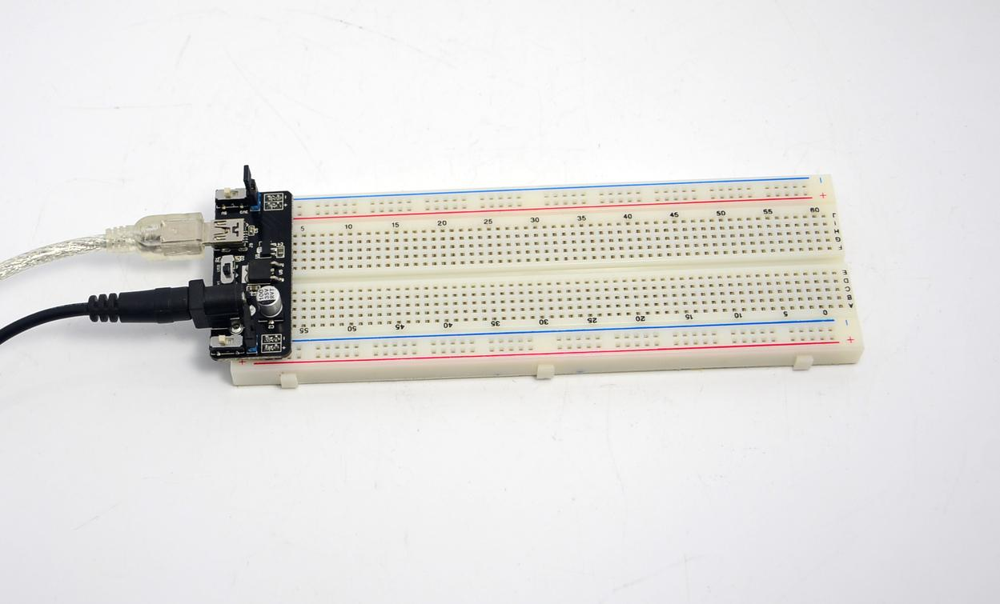

5V/3.3V breadboard power supply designed by SeeedStudio. It can directly takes power from DC wall wart and outputs a selectable 5V or 3.3V regulated voltage. Compare to other breadboard power supply designs, this one provided mini-USB port like the seeeduino , you can toggle the switch and select your power source. The 5V/3.3V breadboard power supply includes mini-USB port and power jack port. This power supply fits the breadboard which is 5.3cm wide like Bread board Clear - 8.2 x 5.3cm,and it can fit the 5.5cm wide breadboard too Basic Bread board - 16.5*5.5 cm,but just a little tight.
With this board, you can send power to both power lane of the breadboard, and each side has a on/off switch.
Model: TOL123D3P

| Specification | Conditions | Min | Typ | max | Unit |
|---|---|---|---|---|---|
| Input voltage | 5.0 | 6.5 | 12.0 | V | |
| Output Voltage | Channel 3.3V | 3.235 | 3.3 | 3.365 | V |
| Channel 5V: 10mA≤IOUT≤600mA, 6.5V≤VIN ≤12V | 4.9000 | 5.0 | 5.100 | V | |
| Output Current | 800 | mA |
Now you may de-activate power by the two jumpers, or adjust the vertical switches to select different voltage. The horizontal switch is used to select Jack pin or mini USB cable as input.

Please list your question here:
If you have questions or other better design ideas, you can go to our forum or wish to discuss.
| Revision | Descriptions | Release |
|---|---|---|
| v1.0b | Initial public release | Nov 16, 2009 |
| v1.1 | Jst power connector converted to DC Jack connector | Sept 20,2011 |
Click here to buy:http://www.seeedstudio.com/depot/adjustable-breadboard-power-supply-p-566.html?cPath=155.
This documentation is licensed under the Creative Commons Attribution-ShareAlike License 3.0 Source code and libraries are licensed under GPL/LGPL, see source code files for details.
Links to external webpages which provide more application ideas, documents/datasheet or software libraries
Copyright (c) 2008-2016 Seeed Development Limited (www.seeedstudio.com / www.seeed.cc)